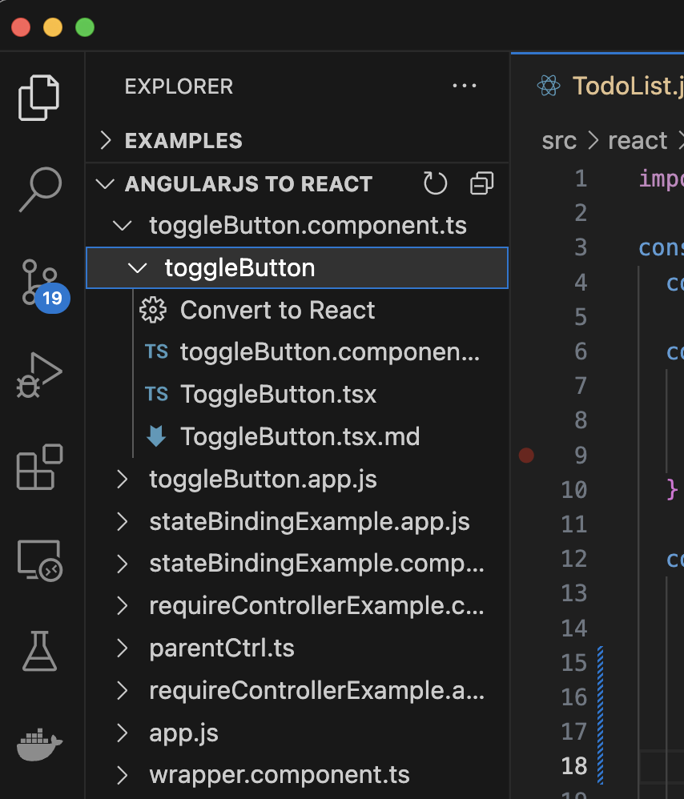
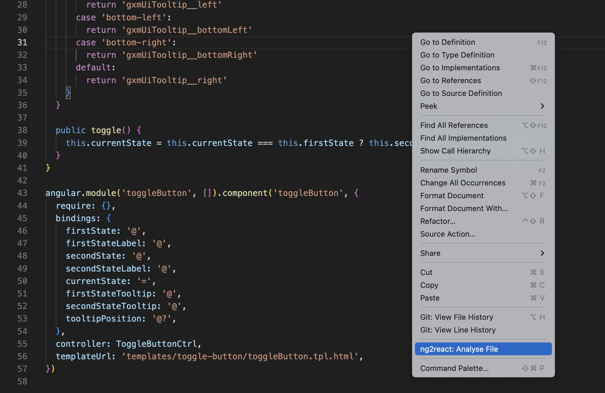
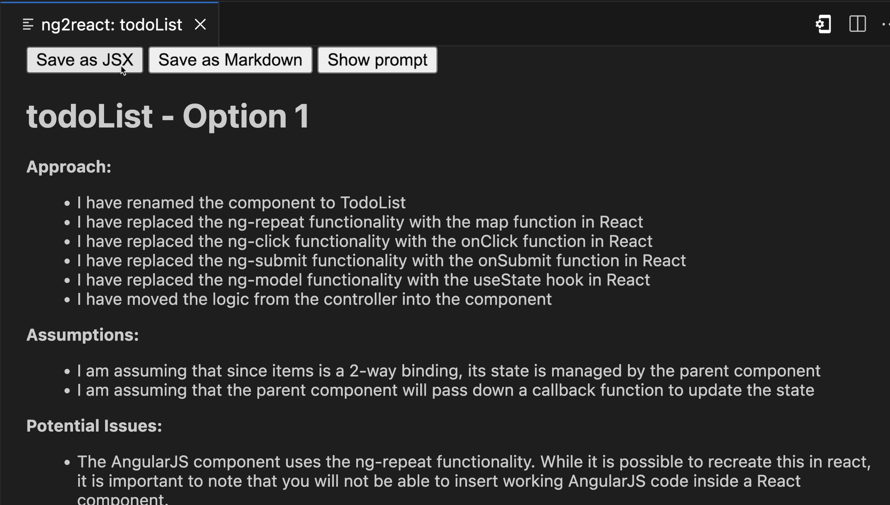
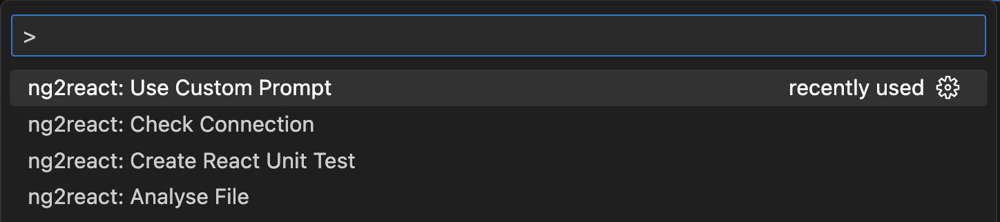

User Guide
- Tree View
- Context Actions
- Command Palette
- Test Generation
Tree View: Finding & Converting Components
| The Ng2React Tree View can be used to identify and convert components |
 |
Context Menu: Analyse and Convert Components
The Ng2React Context Menu can be used to analyse and convert components: 
Review Output
The Ng2React Output Window can be used to review the generated code. You can save the J/TSX, markdown, and even view the prompt used to generate the code.

Command Palette

Wrapping converted components
// React Component
import React, { useState } from "react";
import { useService, NgTranslate } from "@ng2react/support";
const MyReactComponent = ({ title }) => {
const myService = useService("myService");
const [state, setState] = useState(myService.getState());
return (
<>
<h1>{title}</h1>
<p>{state}</p>
<p>
<NgTranslate id={"TRANLATED_TEXT_ID"}/>
</p>
</>
);
};
// AngularJS Component
import * as angular from "angular";
import { angularize } from "@ng2react/support";
import { MyReactComponent } from "./MyReactComponent.jsx";
const myApp = angular.module("myApp", []);
angularize(MyReactElement, {
module: myApp,
name: "myAngularComponent",
bindings: {
title: "@",
},
});